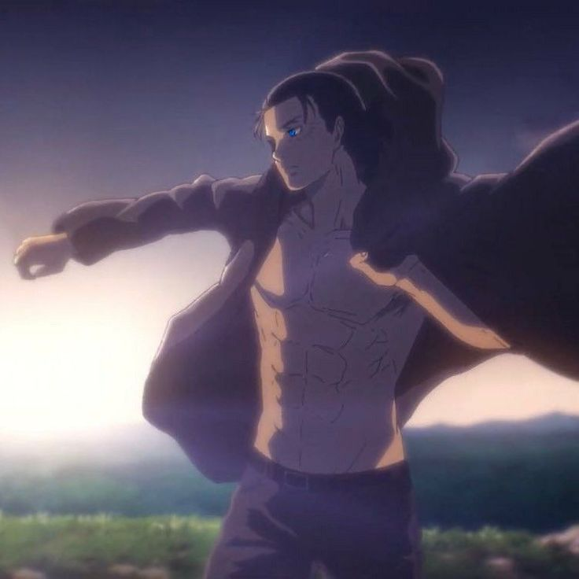
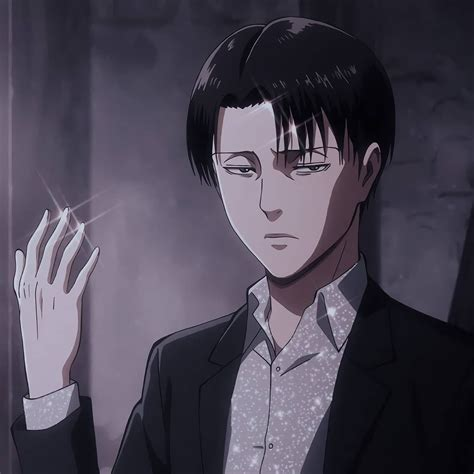

Shingeki No Kyojin akan Kembali hadir di 2023 Akankah Eren akan mati??
ditulis oleh Daniel Satya Ramadhan.pada 9 Novomber 2022.
Shingeki No Kyojin atau di sebut juga Attack On Titan adalah serial televisi anime fantasi gelap Jepang, diadaptasi dari manga dengan nama yang sama oleh Hajime Isayama, yang tayang perdana pada 7 April , 2013.Series anime telah mempunyai 4 season dan untuk seaseon terakhir nya yaitu tahun depan 2023.
Musim 1 Di , protagonis, Eren Jeager, menyaksikan ibunya sekarat setelah dimakan oleh antagonis utama seri, para raksasa. Hal ini menjadi motivasi Eren untuk mengembangkan kemampuan tempurnya guna melawan para raksasa. Kemudian, Eren dimakan oleh titan sendiri tetapi menemukan bahwa dia dapat berubah menjadi titan, mengendalikannya, dan bertarung seperti yang dia lakukan sebagai manusia. Eren belajar bagaimana menggunakan kekuatan barunya untuk memerangi para raksasa dan melanjutkan pelatihannya karena semakin banyak raksasa yang terus membanjiri tanah airnya. Musim 3 Dalam dua bagian musim ketiganya, Survey Corps diburu saat Eren dan anggota lainnya dicari. Kemudian, mereka mempertahankan kampung halaman mereka dalam serangkaian pertempuran melawan para raksasa terkuat. Mereka juga mencari tahu asal usul para raksasa dan kebenaran tentang diri mereka sendiri dan kemanusiaan secara keseluruhan.
Musim 2 Di musim keduanya, pemeran utama karakter, yang bergabung dengan cabang militer "Korps Survei", menemukan lebih banyak tentang para raksasa dan asal-usul mereka.
Gambar Diatas adalah Main character dari anime ini tersebut, Namanya adalah Eren Jeager
Musim 3 Dalam dua bagian musim ketiganya, Survey Corps diburu saat Eren dan anggota lainnya dicari. Kemudian, mereka mempertahankan kampung halaman mereka dalam serangkaian pertempuran melawan para raksasa terkuat. Mereka juga mencari tahu asal usul para raksasa dan kebenaran tentang diri mereka sendiri dan kemanusiaan secara keseluruhan.
Gambar Diatas Adalah Levi Ackerman, ini adalah my favorite character di anime ini.
Musim 4 ini memperkenalkan Gabi Braun dan Falco Grice, kandidat Prajurit Eldian muda yang ingin mewarisi Titan Lapis Baja Reiner empat tahun setelah misi gagal untuk merebut kembali Titan Pendiri. Sementara Marley berencana untuk menyerang Paradis untuk memperkuat militer mereka yang melemah dan mengambil kembali Founding Titan, Survey Corps melakukan serangan di tanah air mereka. Saat Marley dan pasukan Paradis berperang di Marley dan Distrik Shiganshina, kedua belah pihak mengalami banyak korban tewas sementara Gabi dan Falco dipaksa untuk menghadapi ketegangan internal mereka tentang dugaan "iblis" Paradis. Di bagian kedua musim, menyadari sentimen anti-Eldian global yang dihasilkan dari propaganda Marleyan, Eren Jaeger secara preemptif menargetkan dunia di luar Paradis dengan Rumbling, melepaskan jutaan Titans Tembok yang mirip Kolosal dalam upaya luas untuk membunuh semua kehidupan. di luar pulau.